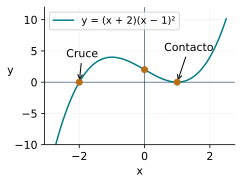
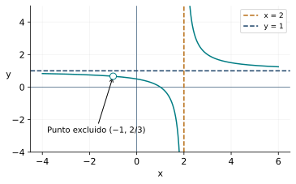
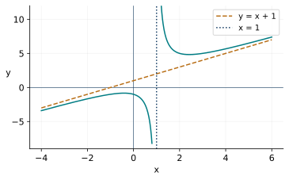
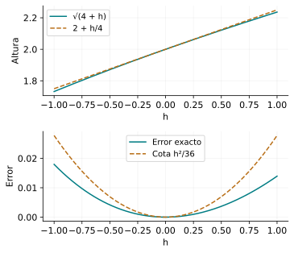

Funciones polinómicas, racionales y radicales
← Funciones afines y cuadráticas · Índice del libro · Siguiente →
Un taller reparte un gasto fijo entre sus productos. Al aumentar la producción, el gasto por unidad disminuye; si además cambia la forma del envase, el volumen aparece como producto de tres longitudes. Una medición de área, en cambio, conduce a recuperar una longitud mediante una raíz. Las tres dependencias nacen de operaciones familiares. Estudiarlas como funciones permite responder una pregunta más amplia: qué valores admiten, qué alturas alcanzan y qué ocurre cuando la entrada se acerca a un valor especial.
La factorización aprendida en los capítulos de álgebra servirá para seguir la gráfica a través de sus ceros. La división conservará las exclusiones del denominador. Las raíces exigirán mirar el signo del argumento y el de la salida. Trabajaremos con desigualdades e identidades exactas: ellas darán fundamento a las curvas y a las aproximaciones.
Los factores cuentan cómo se llega al eje
Una función polinómica real tiene una regla \(P(x)=a_nx^n+\cdots+a_1x+a_0\), con coeficientes reales y exponentes enteros no negativos. Su dominio natural es \(\mathbb R\); un contexto puede seleccionar una parte. Para un polinomio de grado \(n\), el coeficiente \(a_n\) es distinto de cero. Los polinomios constantes y el polinomio cero se conservan como casos propios según las convenciones del capítulo de álgebra.
Si \(P(x)=(x-r)^mS(x)\), con entero \(m\ge1\) y \(S(r)\ne0\), decimos que \(r\) es un cero de multiplicidad \(m\). El factor \(x-r\) cambia de signo al pasar por \(r\). Su potencia conserva ese cambio cuando \(m\) es impar y tiene signo positivo a ambos lados cuando \(m\) es par. El factor restante conserva el signo de \(S(r)\) suficientemente cerca de \(r\). Esta última afirmación tiene una razón algebraica: \(S(x)-S(r)\) es divisible por \(x-r\), y su cociente se puede acotar en un intervalo pequeño. En el apéndice se desarrolla esa cota. Así se justifica el cruce o el contacto con el eje sin confiar únicamente en la apariencia del dibujo.
Problema 1. Un cruce y un contacto
Estudia los ceros y el signo de \(P(x)=(x+2)(x-1)^2\). Describe qué información de su gráfica queda determinada.
Solución. El producto se anula en \(-2\) y en 1. Las multiplicidades son uno y dos, pues los factores restantes valen, respectivamente, 9 y 3. Para \(x\ne1\), el cuadrado es positivo; el signo procede de \(x+2\). Por ello \(P(x)<0\) en \((-\infty,-2)\) y \(P(x)>0\) en \((-2,1)\cup(1,\infty)\). La gráfica cruza el eje en \((-2,0)\) y toca el eje en \((1,0)\) manteniéndose arriba a ambos lados cercanos. Además, \(P(0)=2\).

Problema 2. Escoger una función desde sus ceros
Un polinomio de grado tres tiene un cero doble en 2 y un cero simple en \(-1\). Su valor en cero es \(-8\). Encuentra su regla.
Solución. Las multiplicidades suman tres, por lo que la división sucesiva por los factores deja una constante: \(P(x)=a(x-2)^2(x+1)\). Evaluar en cero da \(4a=-8\), de donde \(a=-2\). La regla es \(P(x)=-2(x-2)^2(x+1)\). El coeficiente resulta distinto de cero, como exige el grado. Los factores restantes valen \(-6\) en 2 y \(-18\) en \(-1\), ambos distintos de cero; las multiplicidades son exactamente las pedidas.
Problema 3. Resolver una desigualdad con repetición
Resuelve \((x+1)^2(x-2)(x-4)\le0\).
Solución. Los puntos que separan los intervalos son \(-1\), 2 y 4. Fuera de \(-1\), el cuadrado aporta signo positivo. El producto \((x-2)(x-4)\) es positivo para \(x<2\) y para \(x>4\), y negativo entre 2 y 4. Se obtiene el intervalo \([2,4]\) al incorporar sus extremos. Además, en \(x=-1\) el producto vale cero. La solución completa es \(\{-1\}\cup[2,4]\). El punto aislado surge del factor doble: allí se alcanza cero aun cuando los valores vecinos son positivos.
Problema 4. Un parámetro cambia el grado
Estudia el grado y los ceros de \(P_a(x)=a x^3-x\) para todo real \(a\).
Solución. La forma factorizada es \(x(ax^2-1)\). Si \(a=0\), queda \(-x\), de grado uno y único cero cero. Si \(a>0\), el grado es tres y los ceros son \(0\), \(1/\sqrt a\) y \(-1/\sqrt a\); los tres son simples. Si \(a<0\), se cumple \(ax^2-1<0\) para cada real \(x\); el único cero real es cero, simple porque ese segundo factor vale \(-1\) allí. La ecuación \(x^2=1/a\) solo aporta raíces reales en el caso positivo. Separar el valor cero del parámetro conserva tanto el grado como el alcance real del problema.
Propiedades de los ceros y los signos
| Propiedad | Fórmula y condiciones de uso |
|---|---|
| Dominio polinómico | Una suma finita de potencias enteras no negativas se evalúa para cada \(x\in\mathbb R\). |
| Multiplicidad | \(P(x)=(x-r)^mS(x)\), \(m\ge1\) entero y \(S(r)\ne0\); \(m\) es la multiplicidad de \(r\). |
| Signo del producto | En un intervalo donde cada factor conserva su signo, el signo del producto es el producto de esos signos. |
| Cruce y contacto | En un cero de multiplicidad impar el signo cambia; en uno de multiplicidad par se conserva, suficientemente cerca del cero. |
| Cota de ceros | Un polinomio de grado \(n\ge1\) tiene a lo sumo \(n\) ceros reales distintos; sus multiplicidades suman a lo sumo \(n\). |
Pruebas. Véase «Ceros polinómicos, multiplicidad y signo» en el apéndice.
Lo que domina cuando la entrada crece
En \(P(x)=2x^3-5x+1\) conviene extraer \(x^3\) para comparar términos:
\[P(x)=x^3\left(2-\frac5{x^2}+\frac1{x^3}\right),\qquad x\ne0.\]
Al dividir por la potencia principal hemos separado el coeficiente 2 de las contribuciones que contienen denominadores crecientes. Para medir cuánto falta para llegar a 2, sumamos los tamaños de esas contribuciones: cuando \(|x|\ge1\), \(1/|x|^3\le1/x^2\) y el error del paréntesis queda acotado por \(6/x^2\). El mismo procedimiento sirve para un polinomio de grado \(n\ge1\): si reunimos los tamaños de los coeficientes restantes en \(S=\sum_{k=0}^{n-1}|a_k|\), obtenemos
\[\left|\frac{P(x)}{x^n}-a_n\right|\le\frac S{|x|}\quad (|x|\ge1).\]
Para obtenerla basta observar que \(1/|x|^{n-k}\le1/|x|\) para cada exponente \(n-k\ge1\). Si \(|x|>2S/|a_n|\), el paréntesis tiene el signo de \(a_n\) y magnitud mayor que \(|a_n|/2\). El signo y la paridad de \(x^n\) determinan entonces las dos colas de la gráfica. Un umbral efectivo permite usar esta idea con seguridad.
Problema 5. Justificar las dos colas
Da una cota que justifique el comportamiento de \(P(x)=2x^3-5x+1\) para entradas de gran magnitud.
Solución. Si \(|x|\ge3\), la diferencia del paréntesis respecto de 2 satisface \(5/x^2+1/|x|^3\le5/9+1/27=16/27<1\). El paréntesis es mayor que uno. Por ello \(P(x)>x^3\) para \(x\ge3\); sus valores superan cualquier altura positiva al tomar \(x\) bastante grande. Para \(x\le-3\), multiplicar por \(x^3<0\) da \(P(x)<x^3\); sus valores descienden por debajo de cualquier cota negativa. La cota usa magnitudes explícitas y conserva el sentido de la desigualdad en la cola izquierda.
Problema 6. Un parecido a gran escala
Compara \(P(x)=-3x^4+2x^2+7\) con \(-3x^4\). Encuentra un umbral que garantice error relativo a lo sumo \(1/10\) respecto del término principal.
Solución. Para \(x\ne0\), \[\frac{|P(x)-(-3x^4)|}{3x^4}=\frac{2x^2+7}{3x^4}.\] Si \(|x|\ge3\), la expresión es a lo sumo \(2/27+7/243=25/243<0{,}103\), cota todavía insuficiente para el décimo. Con \(|x|\ge4\) obtenemos \(2/48+7/768=13/256<1/10\). Ese umbral basta. Ambas colas descienden: el error relativo queda por debajo de uno y el término principal es negativo. Se distingue así una aproximación proporcional de una aproximación con error absoluto pequeño; aquí el error absoluto \(2x^2+7\) crece.
Problema 7. Una escala horizontal y otra vertical
Sea \(p(u)=u^3\). Describe \(g(x)=-2p(x-1)+3\), determina su único cero y justifica su crecimiento o decrecimiento.
Solución. La regla es \(g(x)=-2(x-1)^3+3\). Cada punto \((u,u^3)\) pasa a \((u+1,3-2u^3)\). La entrada se desplaza una unidad, la altura se multiplica por \(-2\) y se suma tres. Resolver \(g(x)=0\) equivale a \((x-1)^3=3/2\), de donde \(x=1+\sqrt[3]{3/2}\). La función cubo es estrictamente creciente: si \(v>u\), \(v^3-u^3=(v-u)(v^2+uv+u^2)>0\), pues el segundo factor es positivo para dos valores distintos. La multiplicación por \(-2\) invierte ese orden, así que \(g\) es estrictamente decreciente y el cero es único.
Propiedades del término principal y las transformaciones
| Propiedad | Fórmula y condiciones de uso |
|---|---|
| Control del término principal | Si \(\deg P=n\ge1\) y \(\lvert x\rvert \ge1\), $P(x)/x^n-a_nS/x$, con $S=_{k<n}a_k$. |
| Signo lejano | Para \(\lvert x\rvert >\max(1,2S/\lvert a_n\rvert )\), \(P(x)\) tiene el signo de \(a_nx^n\) y \(\lvert P(x)\rvert >\lvert a_n\rvert \lvert x\rvert ^n/2\). |
| Transformación de puntos | Para \(g(x)=A f(B(x-h))+k\), con \(A,B\ne0\), \((u,f(u))\) pasa a \((h+u/B,k+Af(u))\). |
| Dominio transformado | \(D_g=\{x:B(x-h)\in D_f\}\), manteniendo \(A,B\ne0\). Con \(A=0\), la expresión conserva el dominio de evaluación de \(f\) si se declara como composición. |
Pruebas. Véase «Dominancia polinómica y transformación de gráficas» en el apéndice.
Una fórmula breve con un dominio que recordar
Una función racional tiene una regla \(P(x)/Q(x)\), con polinomios reales y denominador distinto del polinomio cero. Su dominio natural reúne las entradas con \(Q(x)\ne0\). Para estudiar un punto excluido conviene comparar las multiplicidades del numerador y del denominador.
Si ambos contienen \((x-a)\) con la misma multiplicidad, la cancelación puede dejar una regla con valor finito en \(a\). La gráfica original tiene un punto excluido que se representa con un círculo abierto; el valor de la regla reducida proporciona una extensión. Si queda una potencia positiva de \((x-a)\) en el denominador y el numerador reducido vale algo distinto de cero, aparece una asíntota vertical. Si queda el factor en el numerador, el punto excluido puede situarse sobre el eje horizontal. Estas posibilidades se deciden conservando primero todas las exclusiones originales.
Problema 8. Dos exclusiones con destinos distintos
Estudia \(f(x)=(x^2-1)/(x^2-x-2)\): dominio, ceros, punto excluido finito y asíntota vertical.
Solución. Factorizar da \((x-1)(x+1)/[(x-2)(x+1)]\). El dominio es \(\mathbb R\setminus\{-1,2\}\) y, dentro de él, \(f(x)=(x-1)/(x-2)=1+1/(x-2)\). El cero es 1. En \(x=-1\) la regla reducida vale \(2/3\), por lo que hay un círculo abierto en \((-1,2/3)\). En \(x=2\) el término \(1/(x-2)\) adquiere magnitudes arbitrariamente grandes: es negativo a la izquierda y positivo a la derecha. La recta \(x=2\) es asíntota vertical. La cancelación conserva ambas exclusiones del dominio original.

Problema 9. Una ecuación conserva sus exclusiones
Encuentra las intersecciones de la función del problema anterior con la recta \(y=x\).
Solución. Trabajamos con \(x\ne-1,2\). La ecuación \((x-1)/(x-2)=x\) equivale a \(x-1=x(x-2)\), pues el factor multiplicador vale algo distinto de cero. Se obtiene \(x^2-3x+1=0\), cuyas raíces son \((3-\sqrt5)/2\) y \((3+\sqrt5)/2\). Ninguna coincide con \(-1\) o 2: sustituir esos valores en el polinomio da 5 y \(-1\). Ambas raíces son admisibles y las intersecciones son \((r,r)\) para esos dos valores de \(r\). La equivalencia algebraica y la comprobación del dominio certifican las dos soluciones.
Problema 10. Un signo racional con un punto abierto
Resuelve \((x^2-1)/(x^2-x-2)\ge0\).
Solución. La regla reducida es \((x-1)/(x-2)\) y las exclusiones son \(-1,2\). Numerador y denominador son negativos para \(x<1\), así que el cociente es positivo allí, con el punto \(-1\) retirado. En 1 vale cero. Entre 1 y 2 los signos son opuestos y para \(x>2\) ambos son positivos. La solución es \((-\infty,-1)\cup(-1,1]\cup(2,\infty)\). El signo se ha decidido por intervalos; multiplicar una desigualdad por \(x-2\) habría exigido separar sus dos signos.
Problema 11. Una cancelación que depende del parámetro
Clasifica la entrada excluida de \(f_a(x)=(x-a)/(x-2)\) según el parámetro real \(a\).
Solución. El dominio natural siempre es \(\mathbb R\setminus\{2\}\). La identidad \(f_a(x)=1+(2-a)/(x-2)\) separa los casos. Para \(a=2\) la función vale uno en todo su dominio y tiene un punto excluido finito en \((2,1)\). Para \(a\ne2\), dado cualquier \(M>0\), tomar \(0<|x-2|<|2-a|/(M+1)\) garantiza \(|(2-a)/(x-2)|>M+1\) y, por la desigualdad triangular, \(|f_a(x)|>M\). Hay asíntota vertical en 2; el signo de \(2-a\) decide qué rama sube y cuál baja. El parámetro determina además un cero en \(x=a\) exactamente en este segundo caso.
Propiedades de funciones racionales y puntos excluidos
| Propiedad | Fórmula y condiciones de uso |
|---|---|
| Dominio y ceros | \(D=\{x:Q(x)\ne0\}\); los ceros satisfacen simultáneamente \(P(x)=0\) y \(Q(x)\ne0\). |
| Cancelación | \(AP/AQ=P/Q\) en el dominio original \(\{x:A(x)Q(x)\ne0\}\). |
| Punto excluido finito | Si la regla reducida \(R/S\) cumple \(S(a)\ne0\), la extensión asigna \(R(a)/S(a)\) en el punto originalmente excluido \(a\). |
| Polo tras reducción | Si queda \(R(x)/[(x-a)^mS(x)]\), \(m\ge1\), \(R(a)S(a)\ne0\), la magnitud crece arbitrariamente al acercarse a \(a\). |
| Signos racionales | El signo de \(P/Q\) es el producto de los signos de \(P\) y \(Q\) donde \(Q\ne0\). |
Pruebas. Véase «Cancelación, extensión y polos racionales» en el apéndice.
Aproximarse a una recta
La recta \(y=L\) es una asíntota horizontal hacia la derecha si el error \(|f(x)-L|\) puede hacerse menor que cualquier tolerancia positiva para todas las entradas suficientemente grandes del dominio. Hacia la izquierda se pide la misma condición con entradas suficientemente negativas. Una asíntota oblicua \(y=mx+b\), con \(m\ne0\), se define de la misma manera usando el error \(|f(x)-(mx+b)|\). La definición se refiere a una distancia vertical que tiende a cero.
Para comparar una función racional con una recta podemos recuperar la división de polinomios: la identidad \(P=QS+R\), con resto de grado menor que el divisor, da \(P/Q=S+R/Q\) en el dominio. Si \(S\) es afín, la diferencia vertical entre la curva y la recta \(y=S(x)\) es precisamente el resto dividido por el divisor. Controlar el tamaño de \(R/Q\) permitirá comprobar que esa recta es una asíntota. Si el cociente \(S\) tiene grado mayor, el mismo razonamiento proporciona una aproximación polinómica. La diferencia puede anularse en alguna entrada y hacerse pequeña en las colas, de modo que cruzar una asíntota horizontal es compatible con esa aproximación.
Problema 12. Una tolerancia alrededor de la horizontal
Para \(f(x)=(x-1)/(x-2)\), encuentra entradas que garanticen \(|f(x)-1|<0{,}01\) y explica las dos colas.
Solución. La identidad \(f(x)-1=1/(x-2)\) da \(|f(x)-1|=1/|x-2|\). El error es menor que \(1/100\) exactamente cuando \(|x-2|>100\), es decir, \(x<-98\) o \(x>102\). En ambas colas la recta \(y=1\) es asíntota horizontal. El error es negativo para \(x<2\) y positivo para \(x>2\), lo que sitúa las ramas por debajo y por encima de la recta, respectivamente. Si se usa la función original del problema 8, se mantiene también la exclusión \(x=-1\), ajena a esas dos colas.
Problema 13. Obtener una asíntota oblicua
Estudia la aproximación a una recta de \(g(x)=(x^2+1)/(x-1)\) y da una cota de error.
Solución. La división exacta es \(x^2+1=(x-1)(x+1)+2\). Para \(x\ne1\) resulta \(g(x)=x+1+2/(x-1)\). El error respecto de \(y=x+1\) tiene magnitud \(2/|x-1|\). Para una tolerancia \(\varepsilon>0\), basta \(|x-1|>2/\varepsilon\); se cumple en ambas colas. Además, al acercarse a 1 el término restante tiene magnitudes arbitrarias, con signos opuestos. La gráfica tiene asíntota vertical \(x=1\) y oblicua \(y=x+1\).

Problema 14. Cruzar una asíntota
Estudia \(h(x)=x/(x^2+1)\): dominio, ceros y aproximación horizontal. ¿La gráfica alcanza su asíntota?
Solución. El denominador es positivo para todo real, así que el dominio es \(\mathbb R\) y el único cero es cero. Para \(|x|\ge1\), \[|h(x)|=\frac{|x|}{x^2+1}\le\frac1{|x|}.\] Dada una tolerancia \(\varepsilon>0\), tomar \(|x|>\max(1,1/\varepsilon)\) hace el error menor que \(\varepsilon\). La asíntota es \(y=0\) en ambas colas. La gráfica pasa por \((0,0)\) y cambia de signo allí, pues el denominador es siempre positivo. Alcanzar la recta en una entrada es compatible con la aproximación descrita para las entradas lejanas.
Problema 15. Un polo con el mismo signo a ambos lados
Explica con una desigualdad qué ocurre con \(q(x)=3/(x+1)^2\) cerca de \(-1\).
Solución. La función es positiva para \(x\ne-1\). Dada una altura \(M>0\), si \(0<|x+1|<\sqrt{3/M}\), entonces \((x+1)^2<3/M\) y \(q(x)>M\). Esto vale a ambos lados de \(-1\). La asíntota vertical tiene dos ramas que suben, en acuerdo con la potencia par del denominador. El control cuantitativo explica el comportamiento completo para cualquier altura solicitada.
Propiedades de las aproximaciones racionales
| Propiedad | Fórmula y condiciones de uso |
|---|---|
| División exacta | \(P/Q=S+R/Q\) en \(Q\ne0\), con \(\deg R<\deg Q\) o \(R=0\). |
| Menor grado arriba | Si \(P\) es cero o \(\deg P<\deg Q\), \(P/Q\) se aproxima a cero en ambas colas. |
| Igual grado | Para igual grado y coeficientes principales \(a,b\), \(P/Q\) se aproxima a \(a/b\), con \(b\ne0\). |
| Una diferencia de grado | Si \(\deg P=\deg Q+1\), la división produce la asíntota oblicua \(y=S(x)\) de pendiente distinta de cero. |
| Tolerancia | La condición \(\lvert R(x)/Q(x)\rvert <\varepsilon\) controla la distancia vertical respecto del cociente polinómico. |
Pruebas. Véase «Asíntotas racionales y cotas del resto» en el apéndice.
Las raíces conservan un orden y una elección
Para entero \(n\ge2\) par, la raíz principal \(\sqrt[n]{u}\) asigna al argumento \(u\ge0\) el único número no negativo cuya potencia \(n\) es \(u\). Para \(n\) impar, la raíz asigna a cada real el único real con esa potencia. Las funciones raíz son crecientes en sus dominios; se deduce del orden de las potencias ya estudiado. Una raíz par en un denominador exige argumento estrictamente positivo, pues su valor debe permitir la división. Una raíz impar situada allí exige argumento distinto de cero.
En una fórmula compuesta cada operación aporta sus condiciones. Para \(\sqrt{(x-1)/(x+2)}\) se exige que la fracción esté definida y sea no negativa. Para \(1/\sqrt{(x-1)/(x+2)}\) se exige que sea positiva. Resolver estas condiciones mediante signos reúne álgebra y dominio en el mismo argumento.
Problema 16. Una raíz de un cociente
Encuentra el dominio de \(f(x)=\sqrt{(x-1)/(x+2)}\) y el de \(g(x)=1/\sqrt{(x-1)/(x+2)}\).
Solución. Los puntos críticos son \(-2\) y 1. El cociente es positivo para \(x<-2\) y para \(x>1\), y negativo en \((-2,1)\). En 1 vale cero; en \(-2\) queda excluido. Así, \(D_f=(-\infty,-2)\cup[1,\infty)\). En el segundo caso la raíz debe ser positiva para servir de denominador: \(D_g=(-\infty,-2)\cup(1,\infty)\). Sustituir una entrada de cada intervalo comprueba el signo; la factorización lineal garantiza que permanece allí.
Problema 17. Reconocer una gráfica desde su construcción
Describe dominio, recorrido y variación de \(r(x)=2-\sqrt{3-x}\). Encuentra su cero.
Solución. El argumento exige \(x\le3\). Para estas entradas la raíz recorre \([0,\infty)\), así que \(r\) recorre \((-\infty,2]\) y alcanza 2 en \(x=3\). Si \(x_1<x_2\le3\), entonces \(3-x_1>3-x_2\); tomar raíces conserva ese orden y restarlas de 2 lo invierte. Por tanto \(r(x_1)<r(x_2)\): la función es estrictamente creciente. Su cero exige \(\sqrt{3-x}=2\), equivalente a \(3-x=4\), de donde \(x=-1\). El punto inicial de la curva al recorrer el dominio desde la derecha es \((3,2)\).
Problema 18. Una raíz impar y una restricción posterior
Determina dominio y recorrido de \(s(x)=\sqrt[3]{x-2}\) y de \(t(x)=1/\sqrt[3]{x-2}\).
Solución. La raíz cúbica se evalúa para cada real. Para cualquier salida \(y\), la entrada \(x=y^3+2\) produce \(s(x)=y\); dominio y recorrido de \(s\) son \(\mathbb R\). Para \(t\), el denominador se anula exactamente en 2, de modo que el dominio es \(\mathbb R\setminus\{2\}\). Su recorrido es \(\mathbb R\setminus\{0\}\): para cualquier \(y\ne0\), la entrada \(x=2+1/y^3\) pertenece al dominio y da \(t(x)=y\). Estas preimágenes justifican los recorridos completos.
Propiedades de dominios y raíces
| Propiedad | Fórmula y condiciones de uso |
|---|---|
| Raíz par | Para \(n\ge2\) par, \(u\ge0\), \(y=\sqrt[n]{u}\) equivale a \(y\ge0\) y \(y^n=u\). |
| Raíz impar | Para \(n\ge3\) impar y \(u\in\mathbb R\), \(y=\sqrt[n]{u}\) equivale a \(y^n=u\). |
| Denominador radical | \(1/\sqrt[n]{u}\) exige \(u>0\) si \(n\) es par y \(u\ne0\) si \(n\) es impar. |
| Orden de las raíces | \(u<v\) en el dominio de una misma raíz implica \(\sqrt[n]{u}<\sqrt[n]{v}\). |
| Raíz de un cuadrado | Para todo real \(u\), $=u$. |
Pruebas. Véase «Raíces, dominios y orden funcional» en el apéndice.
Elevar al cuadrado conservando la equivalencia
La igualdad \(\sqrt{A(x)}=B(x)\) exige a la vez \(A(x)\ge0\), \(B(x)\ge0\) y \(A(x)=B(x)^2\). Con esas condiciones, ambos miembros son las raíces no negativas del mismo número y coinciden. El cuadrado conserva la información necesaria cuando se retiene el signo de la salida. Si hay varias raíces, aislar una de ellas permite aplicar este criterio por etapas.
La composición también se estudia paso a paso. Para \(f(g(x))\) la entrada \(x\) debe pertenecer al dominio de \(g\), y la salida \(g(x)\) debe pertenecer al de \(f\). El capítulo dedicado a composición desarrollará sus propiedades generales; aquí usaremos esta condición para interpretar expresiones racionales y radicales.
Problema 19. Seleccionar una solución después del cuadrado
Resuelve \(\sqrt{x+2}=x\).
Solución. El dominio inicial exige \(x\ge-2\) y el signo del segundo miembro exige además \(x\ge0\). Bajo esas condiciones podemos escribir \(x+2=x^2\), que factoriza como \((x-2)(x+1)=0\). Los candidatos son 2 y \(-1\); únicamente 2 cumple \(x\ge0\). La sustitución da \(\sqrt4=2\). En \(-1\), la raíz vale 1 y el segundo miembro vale \(-1\), lo que muestra exactamente qué información de signo se había perdido al cuadrar sin la condición.
Problema 20. Dos radicales y una diferencia
Resuelve \(\sqrt{x+5}-\sqrt{x}=1\).
Solución. Partimos de \(x\ge0\) y aislamos \(\sqrt{x+5}=1+\sqrt{x}\). Ambos miembros son no negativos. Cuadrar es equivalente a \(x+5=1+2\sqrt{x}+x\), de donde \(\sqrt{x}=2\). Cuadrar de nuevo, con ambos miembros no negativos, da \(x=4\). La comprobación \(3-2=1\) confirma la solución. Cada transformación ha sido equivalente sobre el dominio señalado, por lo que la solución es única.
Problema 21. Dos órdenes para componer
Sean \(f(u)=\sqrt u\) y \(g(x)=1/(x-1)\), con sus dominios naturales. Calcula ambas composiciones y sus dominios.
Solución. Para \(f(g(x))=\sqrt{1/(x-1)}\) se exige \(x\ne1\) y \(1/(x-1)\ge0\), lo que equivale a \(x>1\). Para \(g(f(x))=1/(\sqrt{x}-1)\) se exige \(x\ge0\) y \(\sqrt{x}\ne1\), es decir, \(x\in[0,\infty)\setminus\{1\}\). La entrada cero pertenece al segundo dominio y produce \(-1\); en el primero, el argumento de la raíz sería \(-1\). El orden de evaluación determina las restricciones efectivas.
Propiedades de ecuaciones radicales y composición
| Propiedad | Fórmula y condiciones de uso |
|---|---|
| Una raíz aislada | \(\sqrt{A(x)}=B(x)\) equivale a \(A(x)\ge0\), \(B(x)\ge0\) y \(A(x)=B(x)^2\), donde las expresiones están definidas. |
| Dos miembros no negativos | Si \(u,v\ge0\), \(u=v\) equivale a \(u^2=v^2\). |
| Dominio de composición | \(D_{f\circ g}=\{x\in D_g:g(x)\in D_f\}\). |
| Racionalización | \(\sqrt u-\sqrt v=(u-v)/(\sqrt u+\sqrt v)\) para \(u,v\ge0\) y \(u+v>0\). |
Pruebas. Véase «Equivalencias radicales y evaluación compuesta» en el apéndice.
Una raíz puede describir una longitud y un error
Si un cuadrado tiene área \(A\) en metros cuadrados, su lado en metros es \(\sqrt A\). La raíz conserva la información geométrica de una longitud no negativa. Si el área medida cambia un poco, la diferencia de lados se puede estudiar racionalizando: para áreas positivas \(A\) y \(A_0\),
\[\sqrt A-\sqrt{A_0}=\frac{A-A_0}{\sqrt A+\sqrt{A_0}}.\]
El denominador explica la sensibilidad: una misma diferencia de áreas produce diferencias de lado distintas según el tamaño inicial. La misma identidad permite construir una aproximación afín con una cota exacta del error.
Problema 22. Recuperar un lado con incertidumbre
El área de un cuadrado está entre 99 y 101 metros cuadrados, incluidos los extremos. Encuentra el intervalo exacto del lado y una cota de su diferencia respecto de diez metros.
Solución. Como la raíz es creciente, el lado pertenece a \([\sqrt{99},\sqrt{101}]\) metros. Para cualquiera de esas áreas, \[|\sqrt A-10|=\frac{|A-100|}{\sqrt A+10}\le\frac1{\sqrt{99}+10}<\frac1{19}.\] La última desigualdad usa \(\sqrt{99}>9\). El error es menor que \(1/19\) de metro, aproximadamente 5,27 centímetros. El intervalo exacto conserva más información que esta cota simétrica; ambos son útiles según se necesiten extremos precisos o una garantía sencilla.
Problema 23. Una longitud determinada por dos restricciones
Un punto de una semicircunferencia superior de radio cinco tiene abscisa \(x\ge0\). Su altura debe ser al menos tres. Describe la altura como función y determina las abscisas admisibles.
Solución. La ecuación \(x^2+y^2=25\) junto con \(y\ge0\) da \(y(x)=\sqrt{25-x^2}\). En la mitad elegida, el dominio es \([0,5]\). La exigencia \(y(x)\ge3\) se puede cuadrar conservando equivalencia, pues los dos miembros son no negativos: \(25-x^2\ge9\). Así, \(x^2\le16\) y, en el dominio contextual, \(0\le x\le4\). El extremo 4 produce altura tres y cero produce altura cinco. Cada restricción conserva su origen: la raíz corresponde a la altura superior y \(x\ge0\) selecciona la mitad derecha.
Problema 24. Aproximar una raíz cerca de un cuadrado
Para \(|h|\le1\), aproxima \(\sqrt{4+h}\) mediante una función afín de \(h\) y acota el error. Aplica la fórmula a \(\sqrt{4{,}04}\).
Solución. Sea \(s=\sqrt{4+h}\), que es positivo en el intervalo dado. Racionalizar da \(s-2=h/(s+2)\). Como \(s\) está cerca de dos, la fracción sugiere \(L(h)=2+h/4\). La diferencia exacta es \[s-2-\frac h4=-\frac{h^2}{4(s+2)^2}.\] Se obtiene sustituyendo \(s-2=h/(s+2)\) en \(h[1/(s+2)-1/4]\). Como \(s\ge\sqrt3>1\), el denominador supera 36, y por tanto \(0\le L(h)-\sqrt{4+h}\le h^2/36\). Para \(h=0{,}04=1/25\), \(L(h)=2{,}01\) y el error es a lo sumo \(1/22500<0{,}000045\). La aproximación queda por encima del valor exacto. La cota se ha obtenido mediante identidades y orden; su dependencia cuadrática de \(h\) explica la mejora al reducir la perturbación.

Propiedades de modelos radicales y error local
| Propiedad | Fórmula y condiciones de uso |
|---|---|
| Recuperación de una longitud | Un cuadrado de área \(A\ge0\) tiene lado \(\sqrt A\); las unidades pasan de área a longitud. |
| Cota por racionalización | Para \(u,v\ge c>0\), \(\lvert \sqrt u-\sqrt v\rvert \le \lvert u-v\rvert /(2\sqrt c)\). |
| Aproximación en torno de cuatro | Para \(\lvert h\rvert \le1\), \(L(h)=2+h/4\) cumple \(0\le L(h)-\sqrt{4+h}\le h^2/36\). |
| Restricción contextual | El dominio de un modelo reúne simultáneamente las condiciones algebraicas y las condiciones de las magnitudes representadas. |
Pruebas. Véase «Modelos radicales y aproximación afín con error» en el apéndice.
Ejercicios para trabajar sin profesor
1. Estudia ceros, multiplicidades y signo de \((x+3)^2(x-2)\).
2. Un polinomio de grado tres tiene cero doble en \(-2\), cero simple en 1 y valor 12 en cero. Determina su regla.
3. Resuelve \((x-1)^2(x+2)(x-3)\ge0\).
4. Clasifica grado y ceros reales de \(Q_a(x)=ax^4-x^2\) según \(a\).
5. Justifica las dos colas de \(P(x)=-x^3+2x+1\) mediante un umbral efectivo.
6. Para \(P(x)=2x^4-3x^2+1\), garantiza un error relativo a lo sumo \(1/10\) respecto de \(2x^4\).
7. Describe \(g(x)=1-(2x+2)^3\) como transformación del cubo; encuentra cero y variación.
8. Estudia dominio, ceros y exclusiones de \((x^2-4)/(x^2+x-2)\).
9. Encuentra las intersecciones de la función del ejercicio 8 con \(y=x\).
10. Resuelve \((x^2-4)/(x^2+x-2)\le0\).
11. Clasifica la exclusión de \((x-a)/(x+1)\) según el parámetro \(a\).
12. Para \(f(x)=1+3/(x+2)\), determina exactamente cuándo \(|f(x)-1|<0{,}02\).
13. Encuentra las asíntotas de \((x^2+4)/(x+2)\) y da una condición para error oblicuo menor que \(\varepsilon\).
14. Estudia dominio, ceros y aproximación horizontal de \((x-1)/(x^2+1)\). Justifica si cruza la horizontal.
15. Para \(q(x)=-2/(x-3)^2\), encuentra una condición que garantice \(q(x)<-M\), dado \(M>0\).
16. Determina los dominios de \(\sqrt{(x+2)/(x-1)}\) y de su recíproca.
17. Estudia dominio, recorrido, variación y cero de \(r(x)=\sqrt{x+1}-3\).
18. Determina dominio y recorrido de \(1/\sqrt[3]{x+4}\).
19. Resuelve \(\sqrt{2x+3}=x\).
20. Resuelve \(\sqrt{x+8}-\sqrt{x}=2\).
21. Para \(f(u)=\sqrt u\) y \(g(x)=x/(x+1)\), calcula ambas composiciones y sus dominios.
22. El área de un cuadrado está en \([24,26]\) metros cuadrados. Da el intervalo exacto de su lado y una cota de la diferencia respecto de cinco metros.
23. En la semicircunferencia superior de radio trece y con \(x\ge0\), exige altura al menos doce. Encuentra las abscisas admisibles.
24. Para \(|h|\le1\), construye una aproximación afín de \(\sqrt{9+h}\) y prueba una cota cuadrática. Aplícala a \(\sqrt{9{,}06}\).
Soluciones desarrolladas
Ejercicio 1. El signo del factor simple
Los ceros son \(-3\) de multiplicidad dos y 2 de multiplicidad uno. El cuadrado es positivo salvo en \(-3\); el signo del producto coincide con el de \(x-2\) fuera de los ceros. Es negativo en \((-\infty,-3)\cup(-3,2)\) y positivo en \((2,\infty)\). Hay contacto con el eje en \(-3\) y cruce en 2. El valor \(P(0)=-18\) permite comprobar la región negativa entre ambos ceros.
Ejercicio 2. Determinar el factor constante
El grado y las multiplicidades dan \(P(x)=a(x+2)^2(x-1)\). La condición \(P(0)=12\) exige \(-4a=12\), así que \(a=-3\). La regla \(-3(x+2)^2(x-1)\) verifica el dato y tiene exactamente esos ceros, pues el factor restante vale 9 en \(-2\) y \(-27\) en 1, ambos distintos de cero.
Ejercicio 3. Un punto aislado añadido
Fuera de 1, el cuadrado es positivo. El producto \((x+2)(x-3)\) es positivo para \(x<-2\) y \(x>3\), y negativo entre \(-2\) y 3. Se incorporan los ceros \(-2,1,3\). La solución es \((-\infty,-2]\cup\{1\}\cup[3,\infty)\). El cero doble 1 aporta un punto aislado en la región donde el resto del producto tiene signo negativo.
Ejercicio 4. Grado y multiplicidad con parámetro
La forma \(x^2(ax^2-1)\) muestra un cero doble en cero para todo \(a\), porque el segundo factor vale \(-1\) allí. Para \(a=0\) la función es \(-x^2\), de grado dos. Para \(a\ne0\) tiene grado cuatro. Si \(a>0\), aparecen además los ceros simples \(\pm1/\sqrt a\); si \(a<0\), el segundo factor es negativo en toda la recta y cero es el único cero real. Cada caso mantiene las multiplicidades de los factores efectivamente presentes.
Ejercicio 5. Controlar el signo lejano
Para \(x\ne0\), \(P(x)=x^3(-1+2/x^2+1/x^3)\). Si \(|x|\ge3\), el valor absoluto de la suma de las dos fracciones es a lo sumo \(2/9+1/27=7/27<1/2\). El paréntesis es menor que \(-1/2\). Para \(x\ge3\), \(P(x)<-x^3/2\) y desciende sin cota inferior al crecer \(x\). Para \(x\le-3\), \(P(x)>-x^3/2\) y crece sin cota superior al tomar entradas cada vez más negativas. El cambio de sentido se debe al signo de \(x^3\).
Ejercicio 6. Elegir un umbral suficiente
El error relativo es \(|-3x^2+1|/(2x^4)\). Para \(|x|\ge4\), se acota por \(3/(2x^2)+1/(2x^4)\le3/32+1/512=49/512<1/10\). Por ello \(|x|\ge4\) garantiza la precisión pedida. La desigualdad triangular permite una cota uniforme; el problema pide un umbral suficiente, por lo que esta garantía completa la tarea.
Ejercicio 7. La entrada también cambia de escala
Cada punto \((u,u^3)\) pasa a \((u/2-1,1-u^3)\). La regla admite todo real. El cero satisface \((2x+2)^3=1\), así que \(x=-1/2\). Si \(x\) aumenta, \(2x+2\) aumenta y también su cubo; restarlo de uno hace decrecer estrictamente \(g\). La transformación de puntos permite comprobar \(g(-1)=1\) y \(g(0)=-7\).
Ejercicio 8. Conservar el punto cancelado
Factorizar da \((x-2)(x+2)/[(x+2)(x-1)]\), con dominio \(\mathbb R\setminus\{-2,1\}\). La regla reducida es \((x-2)/(x-1)=1-1/(x-1)\). El único cero es 2. En \(-2\) hay un punto excluido finito con altura \(4/3\). En 1 hay asíntota vertical: a la izquierda \(-1/(x-1)\) es positivo y crece en magnitud; a la derecha es negativo. La horizontal es \(y=1\), pues la magnitud del error es \(1/|x-1|\).
Ejercicio 9. Intersecciones admisibles
En \(x\ne-2,1\), \((x-2)/(x-1)=x\) equivale a \(x-2=x^2-x\), es decir, \(x^2-2x+2=0\). Completar el cuadrado produce \((x-1)^2+1=0\). Su miembro izquierdo es positivo para cada real; el conjunto de intersecciones reales es vacío. La conclusión procede de una cota global del polinomio y conserva las exclusiones originales.
Ejercicio 10. Signos del cociente reducido
Los factores \(x-2\) y \(x-1\) tienen signos opuestos exactamente en \((1,2)\). La entrada 2 se incorpora por anular el numerador y 1 queda excluida por el denominador. La solución es \((1,2]\). La otra exclusión, \(-2\), ya queda fuera del intervalo encontrado. Las pruebas con \(x=0\), \(3/2\) y 3 corroboran los tres intervalos determinados por 1 y 2.
Ejercicio 11. El parámetro cancela el polo
En el dominio \(x\ne-1\), la regla es \(1-(a+1)/(x+1)\). Si \(a=-1\), vale uno y tiene un punto excluido en \((-1,1)\). Si \(a\ne-1\), para \(0<|x+1|<|a+1|/(M+1)\) el término fraccionario supera \(M+1\) en magnitud, y la función supera \(M\) en magnitud. La recta \(x=-1\) es entonces una asíntota vertical. El cero admisible es \(a\) en este segundo caso.
Ejercicio 12. Resolver la tolerancia exacta
El error es \(3/|x+2|\). Exigir que sea menor que \(1/50\) equivale a \(|x+2|>150\). Se obtiene \(x<-152\) o \(x>148\). Las desigualdades son estrictas porque en las dos fronteras el error vale exactamente \(0{,}02\). Estos intervalos garantizan la aproximación a \(y=1\) en ambas colas.
Ejercicio 13. División con resto constante
La identidad \(x^2+4=(x+2)(x-2)+8\) da \(f(x)=x-2+8/(x+2)\) en \(x\ne-2\). Por tanto \(y=x-2\) es asíntota oblicua y el error es menor que \(\varepsilon>0\) cuando \(|x+2|>8/\varepsilon\). En \(-2\) el numerador vale 8, así que la exclusión produce una asíntota vertical. El resto tiene signo negativo a la izquierda y positivo a la derecha.
Ejercicio 14. Una horizontal atravesada
El dominio es \(\mathbb R\) porque \(x^2+1>0\). El único cero es 1. Para \(|x|\ge1\), \(|(x-1)/(x^2+1)|\le(|x|+1)/x^2\le2/|x|\). Así, \(|x|>\max(1,2/\varepsilon)\) garantiza error menor que \(\varepsilon\) respecto de cero. La asíntota horizontal es \(y=0\) y se cruza en 1, donde cambia el signo del numerador mientras el denominador sigue positivo.
Ejercicio 15. Descenso por ambos lados
Para \(M>0\), si \(0<|x-3|<\sqrt{2/M}\), entonces \((x-3)^2<2/M\), de donde \(2/(x-3)^2>M\) y \(q(x)<-M\). La condición vale a ambos lados. El dominio excluye 3 y el denominador positivo fija el signo negativo de la función en cada entrada admisible.
Ejercicio 16. Argumento no negativo o positivo
El cociente \((x+2)/(x-1)\) es positivo en \((-\infty,-2)\cup(1,\infty)\), cero en \(-2\) y negativo entre \(-2\) y 1. El dominio de la raíz es \((-\infty,-2]\cup(1,\infty)\). Para la recíproca se exige raíz positiva, y el dominio queda \((-\infty,-2)\cup(1,\infty)\). La entrada 1 se excluye desde la evaluación del cociente.
Ejercicio 17. Raíz creciente y desplazada
El argumento exige \(x\ge-1\). La raíz recorre \([0,\infty)\) y al restar tres se obtiene \([-3,\infty)\). Si aumenta \(x\), aumenta \(x+1\) y su raíz, de modo que la función es estrictamente creciente. El cero satisface \(\sqrt{x+1}=3\), equivalente a \(x+1=9\), así que \(x=8\). El punto \((-1,-3)\) pertenece a la gráfica y alcanza el mínimo del recorrido.
Ejercicio 18. Reconstruir cada preimagen
La raíz cúbica se evalúa para cada real y se anula cuando \(x=-4\); el dominio de su recíproca es \(\mathbb R\setminus\{-4\}\). Para cualquier \(y\ne0\), resolver \(1/\sqrt[3]{x+4}=y\) da \(x=1/y^3-4\), entrada admisible que verifica la igualdad. El recorrido es \(\mathbb R\setminus\{0\}\), pues el recíproco de un real distinto de cero tiene valor distinto de cero y se han construido todas esas salidas.
Ejercicio 19. Un candidato de signo incompatible
Se exige \(x\ge-3/2\) por el argumento y \(x\ge0\) por la igualdad con una raíz. Cuadrar bajo estas condiciones da \(2x+3=x^2\), o \((x-3)(x+1)=0\). Los candidatos son 3 y \(-1\); solo 3 satisface el signo exigido. Comprobar da \(\sqrt9=3\). Las equivalencias sobre \(x\ge0\) justifican que la solución es única.
Ejercicio 20. Aislar antes de cuadrar
Con \(x\ge0\), la ecuación equivale a \(\sqrt{x+8}=2+\sqrt{x}\). Los dos miembros son no negativos; al cuadrar resulta \(x+8=4+4\sqrt{x}+x\). Entonces \(\sqrt{x}=1\), así que \(x=1\). Se verifica \(3-1=2\). Cada paso conserva equivalencia en el dominio y determina el conjunto de soluciones \(\{1\}\).
Ejercicio 21. Una raíz dentro y otra fuera
La composición \(f(g(x))=\sqrt{x/(x+1)}\) exige \(x\ne-1\) y cociente no negativo. El análisis de signos da \((-\infty,-1)\cup[0,\infty)\). En el otro orden, \(g(f(x))=\sqrt{x}/(\sqrt{x}+1)\) exige \(x\ge0\); entonces el denominador es al menos uno. Su dominio es \([0,\infty)\). La entrada cero produce cero en ambas, y una entrada como \(-2\) pertenece únicamente a la primera.
Ejercicio 22. Propagar una incertidumbre de área
El lado está en \([\sqrt{24},\sqrt{26}]\) metros. Racionalizar frente a cinco da \(|\sqrt A-5|=|A-25|/(\sqrt A+5)\le1/(\sqrt{24}+5)<1/9\) de metro, porque \(\sqrt{24}>4\). Los extremos exactos proceden de la monotonía de la raíz. La cota simétrica ofrece una garantía válida para todas las áreas del intervalo, incluidas sus fronteras.
Ejercicio 23. Altura en una semicircunferencia
La altura es \(y(x)=\sqrt{169-x^2}\) en \([0,13]\). Exigir \(y\ge12\) equivale, por no negatividad, a \(169-x^2\ge144\), es decir, \(x^2\le25\). La selección \(x\ge0\) da \([0,5]\). En los extremos, las alturas son trece y doce, respectivamente; ambas cumplen la condición y se incluyen.
Ejercicio 24. Un error que conserva su signo
Con \(s=\sqrt{9+h}\), racionalizar da \(s-3=h/(s+3)\). La aproximación afín es \(L(h)=3+h/6\). Restando exactamente se obtiene \(L(h)-s=h^2/[6(s+3)^2]\). Para \(|h|\le1\), \(s\ge\sqrt8>2\), de modo que \(0\le L(h)-s\le h^2/150\). Con \(h=0{,}06=3/50\), \(L=3{,}01\) y el error es a lo sumo \(9/375000=0{,}000024\). La cota y el signo proceden de la identidad exacta, y la aproximación queda por encima de la raíz.
Diagnóstico de salida
Escoge una función factorizada, una racional y una radical. Justifica sus dominios y ceros. Explica un cambio de signo, un punto excluido y una equivalencia al cuadrar. Para una aproximación estudiada, indica el intervalo y la cota del error.
← Funciones afines y cuadráticas · Índice del libro · Siguiente →